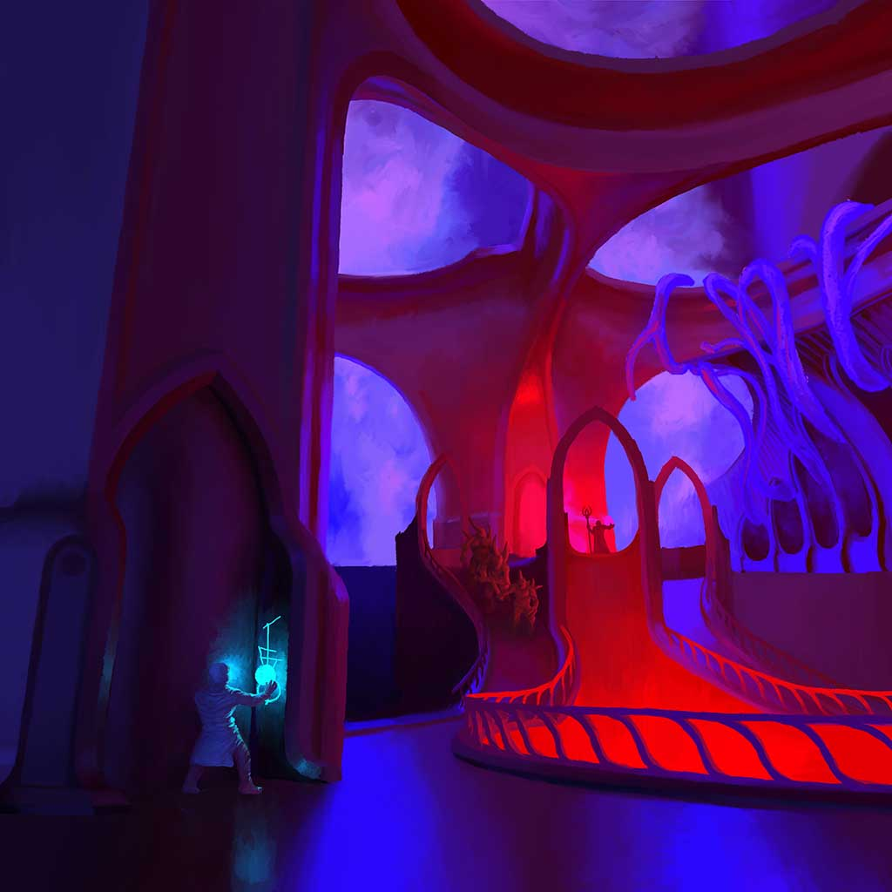

ULTRA UNIVERSI
ABOUT
>
INTRO
>
Ultra Univeri is a personal design project focusing on developing art for VR platforms that I have been working on in my spare time.
V.R opens up exciting avenues for gaming but as of yet the technology isnt quite ready for mass consumption, and the games themselves tend to be fairly simpl and unimaginative .
As an artist though, my chief concern is how the technology affects development of game art and in particular environmental art.
1: How will the increased vertical F.O.V affect environmental design?
>
One of the major differnces between viewing games in VR and viewing on a traditional television is the field of view
Traditional video games have a very narrow field of view on the vertical axis and as a result environments are often created like stage sets to maximise resources.
Players will rareley "look up" in a traditional video game, whereas in VR the desire to look up, down, and in any direction is limitless
2: How will V.R affect the construction of art assets?
>
Having played a few V.R. games, one of the things that struck me was how the medium reveals the flaws of traditionally made art assets.
Many of the tricks and shortcuts used to create art assets simply do not hold up in V.R. As such I have decided to try and contruct assets in a manner closer to the real world.
This entails giving a bit more attention to the structure of the object, and i have found that using anistropic mapping gives a sense of real-world surfaces.
3: General Artistic Research
>
Beyond V.R specific aims, I was interested to develop my own artisitc skills.
I was especially interested in creating an large coherent environment, as well as devloping my level design and Concept skills in the process.

1st piece of concept art produced for the project.